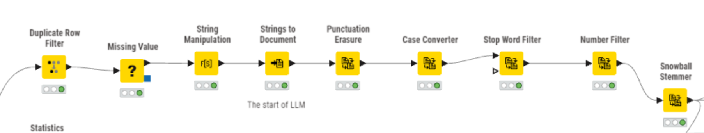
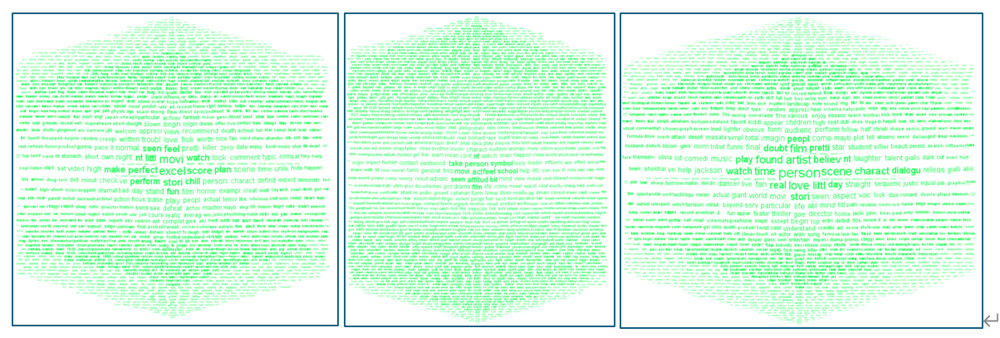
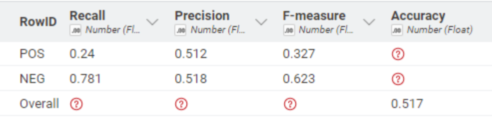
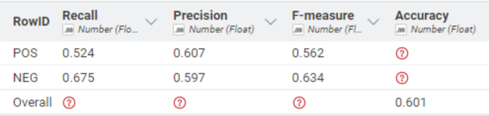
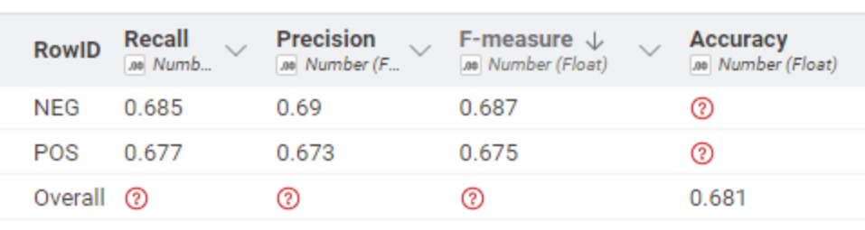
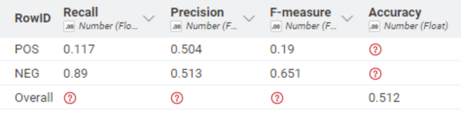
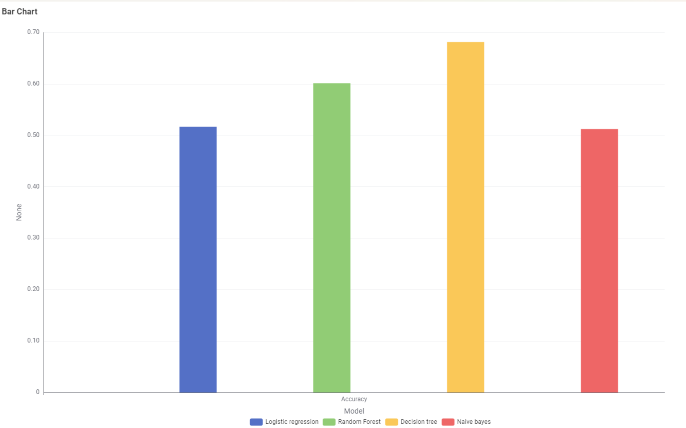

Movie Review Sentiment Analysis & AI Chatbot
Bridging Natural Language Processing with Generative AI
📌 Project Executive Summary
In today’s information-rich landscape, consumer reviews are essential for gauging a movie’s commercial success.
This project features an automated analytical pipeline that employs text mining and sentiment analysis to pinpoint key success drivers.
To enhance user engagement, I integrated Generative AI to build an interactive interface that delivers real-time, data-backed insights into audience evaluations.
🛠️ Technical Methodology
I utilized KNIME to design a robust ETL (Extract, Transform, Load) and text mining pipeline.
- Volume: Processed and refined a balanced dataset of 2,000 movie reviews.
- Pre-processing: Implemented TF-IDF weighting alongside tokenization and stemming to filter linguistic noise and isolate high-impact sentiment descriptors.
- Theme Extraction: Performed Word Cloud Analysis to identify the 4 most prominent market themes driving user reviews.
Sentiment Classification
- Goal: Develop a predictive pipeline to categorize audience sentiment, supporting data-driven brand perception analysis.
- Model Performance: Evaluated multiple classifiers (Naive Bayes, Logistic Regression, Random Forest), with the Decision Tree model achieving a peak accuracy of 68.1%.
GenAI Integration
- The Chatbot: Integrated Generative AI to build an interactive chatbot capable of answering complex user queries about movie evaluations.
- Impact: Demonstrated the transition from static sentiment classification to generative insight extraction, showcasing the future of automated customer intelligence.
📊 Visual Insights & Workflow

1. Data Preprocessing

To transform 2,000 raw movie reviews into a structured format suitable for modeling, I developed a rigorous text-preprocessing pipeline in KNIME.
This process began with foundational data cleansing to address missing values and duplicates, followed by advanced NLP techniques to minimize linguistic noise.
By implementing Punctuation Erasure, Case Conversion, and Stop Word Filtering, I successfully standardized the text and eliminated non-essential vocabulary.
The final refinement involved Snowball Stemming to harmonize word variations, ensuring the model could capture core sentiments regardless of tense or syntax.
This comprehensive preparation resulted in a highly balanced dataset, providing a robust and bias-free foundation for the subsequent sentiment analysis.
2. Strategic Market Insights


By implementing Latent Dirichlet Allocation (LDA) for topic modeling, I extracted three distinct market themes from the review data to inform content investment strategies.
The analysis identified Horror Movies as a high-value category due to strong audience engagement with thrilling and realistic content.
Additionally, the findings highlighted that Cast and Music are decisive factors influencing viewer satisfaction and subscription retention.
While genres such as War Dramas represented a smaller segment, the data suggested a niche but loyal audience for high-quality production in this area.
These strategic insights enable streaming platforms to optimize production budgets and refine recommendation algorithms, leveraging data to replicate the success of audience-centric hits such as Stranger Things.”
3. Model Optimization




A comparative analysis of model metrics reveals significant variations in how different algorithms capture sentiment nuances. While the Decision Tree maintained a balanced performance across both classes, other models such as Logistic Regression and Naive Bayes exhibited a strong bias toward negative sentiment, as evidenced by their high recall for ‘NEG’ but disproportionately low recall for ‘POS’.
This discrepancy suggests that linear and probabilistic classifiers struggled to identify the complex linguistic patterns associated with positive feedback in the dataset.
In contrast, the Random Forest and Decision Tree models achieved much higher F-measures for positive reviews, demonstrating their superior ability to handle the non-linear features and varied vocabulary found in movie critiques.

To identify the most reliable classifier for movie sentiment, I benchmarked four distinct algorithms including Decision Tree, Random Forest, Logistic Regression, and Naive Bayes.
As illustrated in the accuracy comparison chart, the Decision Tree model emerged as the top performer with a leading accuracy of 68.1%, demonstrating superior adaptability to the unstructured nature of movie reviews.
A deeper look into the class-level metrics reveals that the Decision Tree achieved a remarkable equilibrium by maintaining an F-measure of approximately 0.68 for both positive and negative categories.
In contrast, models such as Logistic Regression and Naive Bayes showed a significant bias toward negative sentiment, evidenced by their exceptionally low recall for positive reviews.
This discrepancy suggests that while linear and probabilistic classifiers struggled to capture the nuanced vocabulary of favorable critiques, the tree-based approach effectively handled the non-linear features and varied vocabulary found in the dataset. By selecting the Decision Tree, I ensured a balanced predictive capability that accurately identifies both audience hits and critical failures without favoring a single sentiment class.
💡 Reflection & Future Scope
The Challenge
The primary technical hurdle in this project was navigating the inherent subjectivity and nuanced language within the dataset. A significant source of potential error arose from the discrepancy between overall ratings and specific textual expressions; for instance, a reviewer might praise a film’s technical aspects while giving a low overall score, or vice-versa. This mismatch creates “noise” in the data labels, directly impacting the model’s ability to learn consistent sentiment patterns.
While achieving a 68.1% accuracy with the Decision Tree provided a strong baseline, these results underscore the limitations of traditional machine learning in reconciling contradictory signals within a single review.
Future Scope
To transcend the performance ceiling caused by label ambiguity, the next phase of this research involves integrating Large Language Models (LLMs) through the OpenAI API.
Unlike standard classifiers, generative AI can perform aspect-based sentiment analysis, allowing it to separate conflicting opinions within the same text. Although initial experiments were constrained by API latency, leveraging these models for more sophisticated emotional detection remains a key objective. Future iterations will focus on scaling the dataset and utilizing transformer-based architectures to track sentiment evolution, providing more dynamic intelligence for content investment strategies.
Strategic Insight
This project reinforces the principle that data is a narrative tool rather than just a collection of metrics.
By bridging analytical rigor with market curiosity, I demonstrated how raw text can be converted into a blueprint for data-driven decision-making.
These insights allow streaming platforms to optimize production budgets and refine recommendation algorithms to align with specific viewer preferences—ensuring that content strategies are as compelling as the stories they aim to tell.